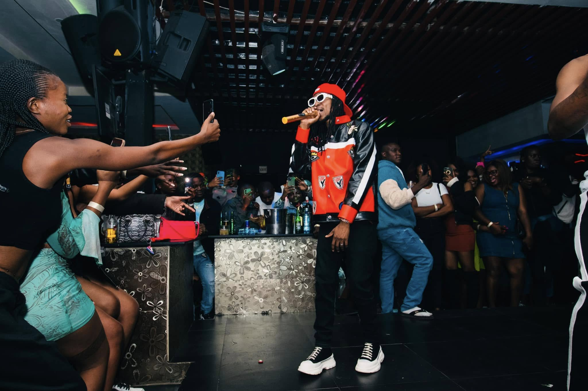

Use Headphone For Better Experience.
Yo Maps & Omarion Electrify the Stanbic Music Festival!

August 3, 20
 4 Min
4 Min
The 2024 Stanbic Music Festival was a night to remember!
headlined by Zambia's music sensation Yo Maps and American R&B superstar Omarion. The duo set the stage ablaze, delivering high-energy performances that had fans singing and dancing all night.The event, marked by its vibrant performances and celebratory energy, showcased the power of music to unite and entertain, further cementing the Stanbic Music Festival as one of Zambia's premier entertainment events.
Yo Maps opened the evening with his chart-topping hit Superman, igniting the crowd with his infectious energy. The audience, armed with glowing phone screens, recorded the memorable moments as they swayed to his rhythmic beats. The highlight came when Omarion joined Yo Maps on stage for a surprise performance of their collaborative track, Superman. Their fusion of Zambian afro-fusion and smooth American R&B created a magical atmosphere, leaving the crowd enthralled.

" His ability to captivate diverse audiences showcases his status as one of Zambia's most celebrated artists, blending local Afrobeat rhythms with a global appeal"
This section highlights how Yo Maps' electrifying performance at the 2024 Stanbic Music Festival, alongside international star Omarion, left fans in awe and solidified his place as a Zambian music icon. It captures the energy and passion of his artistry, showcasing his ability to create unforgettable moments on some of the most prestigious stages.
Yo Maps.